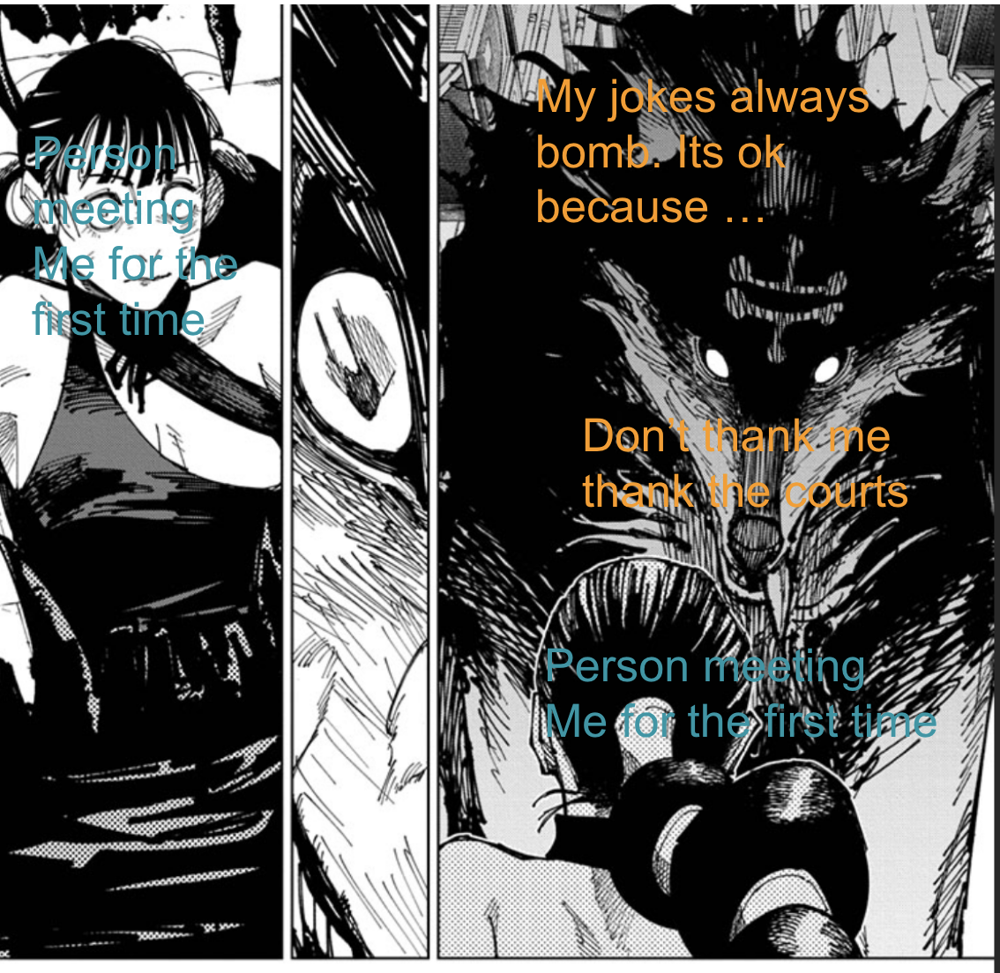
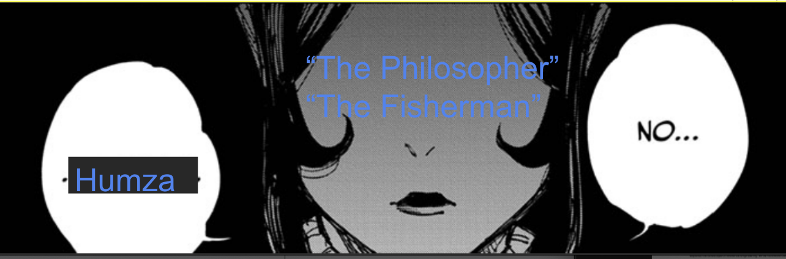
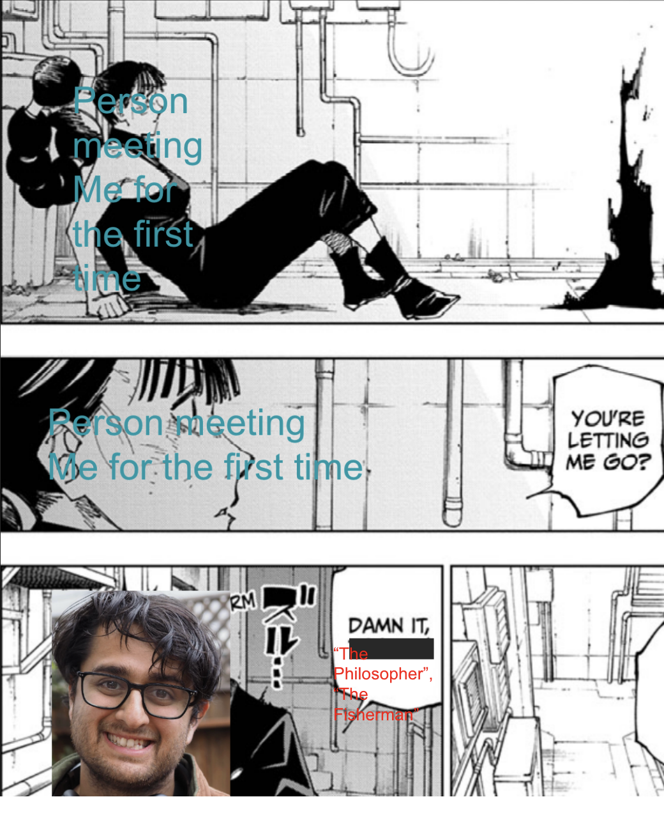
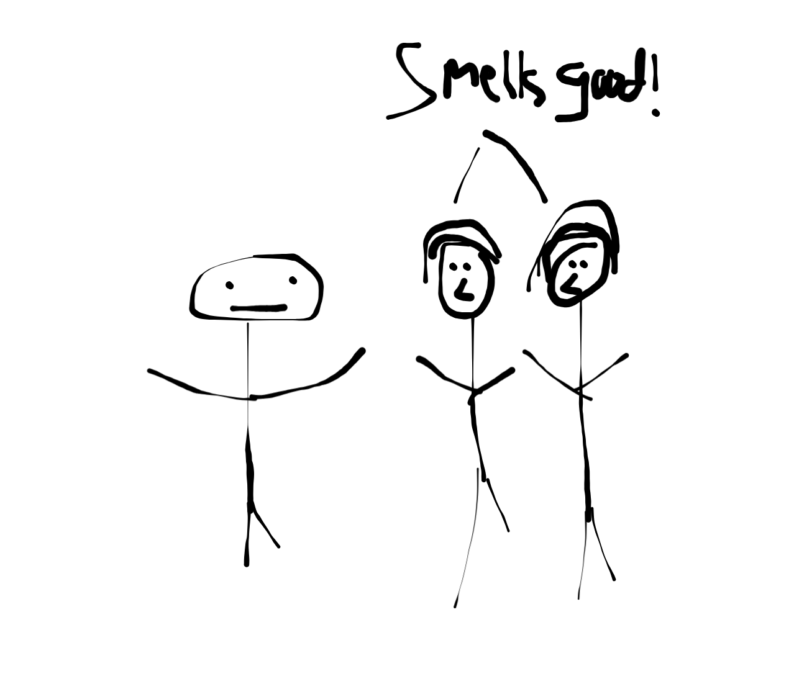
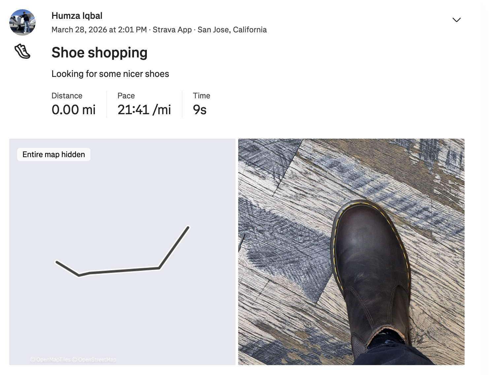
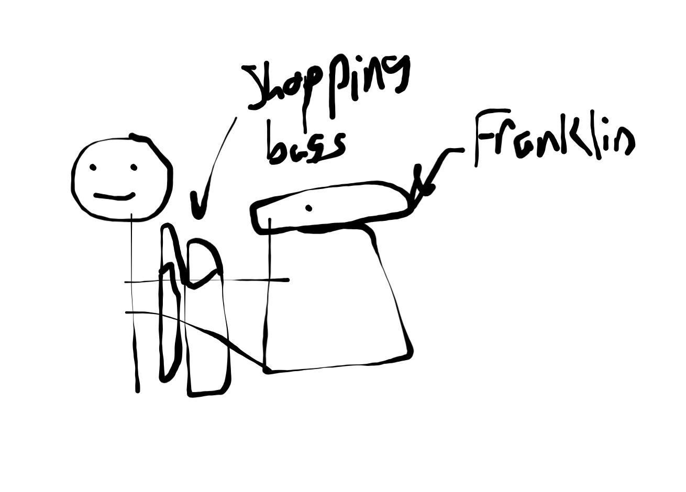
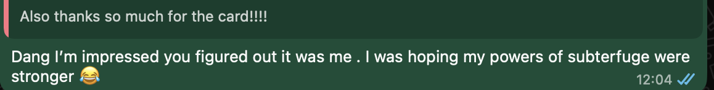
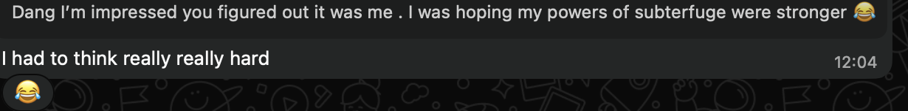

Shoutouts
Happy birthday to “The Raja of Rhythm”. You’re a really great friend and a very down to earth person. And you’re band is awesome, watching you all perform live at your party was such a treat!
“The Fisherman” wrote and produced a meme song about me which she plans to perform at a “pitch my friend” event. The song is hilarious and very sweet!
Monday
Today was a busy day at work so I don’t really do all that much afterwards. I make a brief cameo at Mission Run Club and give someone a birthday present and then went home to work more.
Tuesday
In the morning before work I met with a potential personal trainer. I’m actually going to start doing personal training instead of Barry's to lock in a better foundation and lift in a way more tailored to me. As I’ve been telling people I don’t want arms made for radio anymore.
The guy I met was quite nice and definitely seemed experienced in weight lifting. I picked the place I went to because some of my former coworkers recommended it and said they got really good results so I’m ready to give it a try.
Otherwise I just worked today.
Wednesday
I met with a different personal trainer today at the same place I met the first one. This guy was good but he seemed more focused on running than weight lifting. I told him about my 2:10 half marathon time and the fact that I could run a 10K at an 8:06 pace without too much training and was really impressed by that and said he wanted to see what I could do with training. In truth I kinda did too but if I want to strive towards my goal of finding a partner and improving my bone density I think a trainer more focused on weightlifting is the way to go. That being said I’m open to following up with this guy later once my weightlifting is down and I do want to think about running more.
I went to Midnight Runners after work today and felt a bit let down by the whole experience. It wasn’t as though it was terrible or anything but I found that the people I met were just somewhat less receptive on average than normal. I felt rather bored when talking to new people which hasn’t happened this badly in a while. It got to the point where I wanted to break my first impression training to give myself and forego restraint for my own interest. Moments like these reminded me of why I started asking the question I heard from “The Juggler” “What’s something cool or interesting about you that people wouldn’t expect?” regardless of whether it's socially appropriate. Why I always enjoy telling my jokes right away even if they aren’t called for or my friends have suggested to varying degrees of subtlety that I stop. I hated the sheer boredom of a conversation that's like farming a barren wasteland. It had me so bored I needed to do something so I didn't come to totally resent the conversation. Inside me there were two wolves. One who wanted to uphold the training I was diligently taught. The other that wanted to give into my impulses.



I tamed this wolf and went home early
It helped that we were running through GGP which is right next to where I live so going home is easier than usual and the run is less well lit than usual which made me less inclined to stay.
Thursday
After work I go with “The Quant,” “Top of the Rope,” and “The Menace” to Oakland. I organized a last minute trip there because I realize my Thursdays tend to be pretty samey and I kinda wanted to do something a bit out of the ordinary.
We took the ferry over and walked around in Jack London Square which was surprisingly quiet. After walking around for a while we went to a really good Haitian restaurant. I got some goat curry and the meat there was delightful.
Then we went to Lake Merritt and walked around there for a while. It’s quite lovely at night and there were a number of other people there. A couple people ahead of us were talking amongst themselves and I overheard that one of them had been walking around the Lake at 4AM since she was a teenager which I thought was pretty cool.
After Lake Merritt we head back on the BART. I learned from “Top of The Rope” that there is some evacuation drill that BART employees do at 2 in the morning where they walk across the underground tunnel from Embarcadero to West Oakland that one of her friends got to participate in because they know somebody at BART. I really want to do this drill so I need to find somebody at BART to talk to.
Now I got to show both “The Menace” and “The Quant” Oakland which feels like a win. I’m glad “The Quant” likes it because I have a small Oakland operation coming up in about a month that will require his help. Plus it felt good to socialize since I haven’t done much of it this week.
Once we got back I made a quick stop over at bar night where I saw “That’s nuts,” “The Mosher,” “The Best,” “The Finer things,” “The Twitch streamer,” and “The Bartender”. I learned that “The Twitch streamer” dyed his hair red which looked good on him. I also learned from “That’s nuts” that apparently bread has ears which I wasn’t aware of until now.
Friday
After work I have another one:one with “The Historian”. We went to a Korean restaurant in Millbrae called Han Sang. I get a disk called Suyuk which is basically a soup with a bunch of cuts of beef like brisket, tendon, tongue, belly and so on in a soup made with beef bone broth. The meat was quite good but I don’t like the soup as much. It’s ok but nothing great. Maybe if I was a midwestern woman like at least a couple of my readers I’d like it more but sadly I am what I yam and all that jazz.
After the soup we walk around and immerse ourselves in Millbrae. He mentions that he’s at the age (2 years older than me) where he could see himself living in Millbrae and coming up to SF to visit. I’m definitely not there yet and not sure I could see myself there in 2 years but it is a reflection of how time is passing by. When he was younger I don’t think I could have seen that for him but here we are.
Saturday
The day begins with Marina Run Club with “The Menace,” “Top of the Rope,” and a special guest star being “Franklin” the air purifier. To be honest I wasn’t intending to bring him but I need him for something later and as you’ll see I don’t have time to go home so bring him I must.
Of all the run clubs Marina Run Club is definitely the one I was the most nervous about bringing “Franklin” to because I figured that people there would be the most uppity about it. To my surprise though people were quite receptive. On the run a couple people took videos of me and asked why I brought him. One of the captains wanted to take some pictures of me and said it was the most interesting thing she saw at Marina Run Club. I’m a bit out of practice running with “Franklin” and found it hard to keep even a 10 minute pace which means I really am out of shape after all. Whats worse is I messed up my Strava :(.
After run club I quickly went to the Caltrain station to meet up with “The Fisherman,” “Not a Flosst Cause,” and “Sustainably Fashionable”. We head down to Westfield mall in the slums of San Jose to go shopping. The goal is to turn me and “The Fisherman” into thirst traps, our baddification if you will.
We start by getting me some cologne. We iterate a while to find the brand that works best for me which results in a bunch of sniffing of different smells on me

It was funnier in person but sadly this is the best my drawing skills can capture. Afterwards we go to Uniqlo, Zara, I get some Doc martins and log a shoe strava run

At this point I have to admit that carrying “Franklin” and my 3 shopping bags is proving to be quite difficult. To be clear I was offered help at multiple points so I really have nobody to blame but myself here. However I knew it would be all the more satisfying if I commit to this bit fully and not half ass it.
After San Jose I head back to SF to pick up a birthday card for “The Raja of Rhythm”. As mentioned in the shoutout it's his birthday this week and he is having a party that starts shortly after I get back. I go to Walgreens, pick up the card, and shuffle along carrying the birthday card, my 3 shopping bags, and “Franklin” to his place. Of course I could have gone home first and dropped off my stuff but I would have come late which is a no go in the book of Humza. Besides, it's a hell of a lot more satisfying to not only fulfill my bit but do so on hard mode.

The bags definitely start breaking at this point but somehow I make it to his place.
The party is awesome! We have a wide ensemble of characters including “The Raja of Rhythm,” “The Menace,” “The Quant,” “The Philosopher,” “The Notetaker,” “The Writer,” “Top of the Rope,” “The Yogi,” “The Film maker,” “John Wick,” “Mr. Socksessful”. It was really nice of “The Raja of Rhythm” to buy food for the whole party including some excellent tacos from El Metate.
Later we see “The Raja of Rhythm’s” band zero leaf clover make their debut appearance and it was incredible! I knew I was in for something great but this definitely exceeded my expectations. I’m super proud of “The Raja of Rhythm” for really diving into a bunch of new hobbies over the last year like motorcycling and now banding. I can’t wait to see them do more shows and continue to grow!
Afterwards we had a DJ set from “The Film maker”! I went to his first set a few episodes ago and like fine wine it aged better with the second set. He made a special set dedicated to “The Raja of Rhythm” with some of his favorite songs which was super thoughtful.
There was another DJ set from one of “The Raja of Rhythm’s” bandmates which was also delightful. At least I think it was one of his bandmates. If not it was by some guy and it was still delightful.
As a side quest I wanted to get as many signatures on “The Raja of Rhythm’s” birthday card as I could.
I generated this image to show his major hobbies (trash pickup, motorcycling, banding), and him leaving his old job for a new one (iykyk for the job representations here).
I thought it would be fun to make the card a surprise and leave it in his apartment so he doesn’t realize I’m the one who made it but somehow he figured it out :0. And based on the text he sent me I think he realized it quite quickly.


During the DJ set some people were trying to do the worm. Someone was looking for someone to do it. I thought back to many years ago in college when I was able to do it and I said f it we ball and I did it which impressed a bunch of people.
Sadly I’m getting old because around 11pm I needed to head out and lie in my night grave.
Sunday
The day begins with trash pickup with “The Writer,” “The Fisherman,” “The Quant,” “The Philosopher,” “The Notetaker” and a college friend of “The Fisherman” along with her boyfriend. The latter two of whom are visiting from the mythical magical land known as the UK.
The trash pickup itself is good and we get to show our visitors some of the finest alleys the MIssion has to offer complete with friendly locals, bountiful curb candy, and many other amenities.
After trash pickup I have another one on one with “The Yogi” over at Peacock Pansy. We catch up and talk about travelling and hosting. I learned that perhaps if I want to be more into travel maybe I should consider more nature as opposed to cities because it can be a bit less samey. That being said I still have plenty of goals to develop here in SF so travel isn’t really on my radar too much regardless but who knows it is something to consider.
Later I go meetup with “The Fisherman” along with the two visitors to help “The Fisherman” as her crabbing intern. She teaches people how to crab and I help with whatever odds and ends come up as part of the job. In my case it was mainly untangling nets, getting water for people, and carrying stuff around. The people today were cool, they seemed nice and quite interested. Unfortunately I messed up my internship because I accidentally got the rope from the net tangled in the wheel of the wagon used to carry the stuff back to the car and left before it was discovered leaving everyone else to clean up the aftermath.
From there I go to meetup with my family for a belated Eid dinner at Anatolian table. The dinner itself goes pretty well, nothing too out of the ordinary. Well, except for the fact that when we get ice cream afterwards some guy comes up to us and says we shouldn’t be sad when waiting in line for ice cream. My family was caught a bit off guard by this; I took the opportunity to bow deeply and exclaim “Sir! I will do my best to smile in the future!” He finds this funny and walks away. My Mom also finds it funny but my older sister is definitely judging me for this one. Unlike on Wednesday I have no problem letting the wolves out here.
After parting ways with the fam I head over to a speakeasy in The Tenderloin to meet back up with “The Fisherman” and the two visitors. Over drinks (that they get obviously), I get asked some interesting dating questions. For example, how many nights would I be ok just spending at home. They ask this since they realize I am high energy and don’t want to normally spend a bunch of time at home if I can help it but if I have a partner I may need to. I say 2 nights a week which they say is a reasonable answer. They also ask if I would be ok if my partner said she would need time away from me (like maybe a day a week) and I say yeah that's fine. It's not as if I have a shortage of other people to hang out with or things to do. “The Fisherman” definitely thinks I need to find someone high energy and non introverted which I agree with. My partner doesn’t need to be as outgoing as I am but she needs to at least be on my wavelength about it.
From there I go home and don’t write up the newsletter and decide to sleep